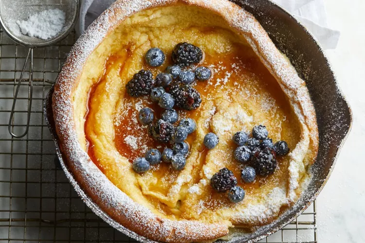

Dutch Baby Pancake Recipe

Description
A Dutch Baby pancake is an oven-baked pancake that resembles an oversized popover or Yorkshire pudding. Typically baked in a skillet, a Dutch Baby pancake is also called a puff pancake, pfannkuchen (German pancake) or nöckerl (Austrian pancake). According to food lore, the name Dutch Baby was coined by the daughter of a Seattle restaurateur, whose now-shuttered Mancas Cafe served German (or deutsch) pancakes. Deutsch evolved into Dutch, and hey, we love a good origin story.
Ingredients
- 3 tablespoons butter
- 3 eggs
- 3/4 cup milk room temperature
- 3/4 cup flour
- 1 tablespoon sugar
- 2 teaspoons vanilla extract
- 1 pinch salt
- 2 tablespoons confectioner's sugar
Steps
- Preheat the oven to 400 degrees F (200 degrees C). Place butter in an ovenproof pan or cast iron skillet and place in the oven.
- Meanwhile, combine eggs and milk in a bowl. Add flour, sugar, vanilla extract, and salt and whisk for 1 minute to remove lumps.
- Remove hot pan from oven and swirl melted butter to coat. Pour batter into the hot pan and return it to the oven.
- Bake in the preheated oven until the pancake is puffed in the center and golden brown on the edges, 20 to 25 minutes.
- Dust with confectioners' sugar and serve immediately.